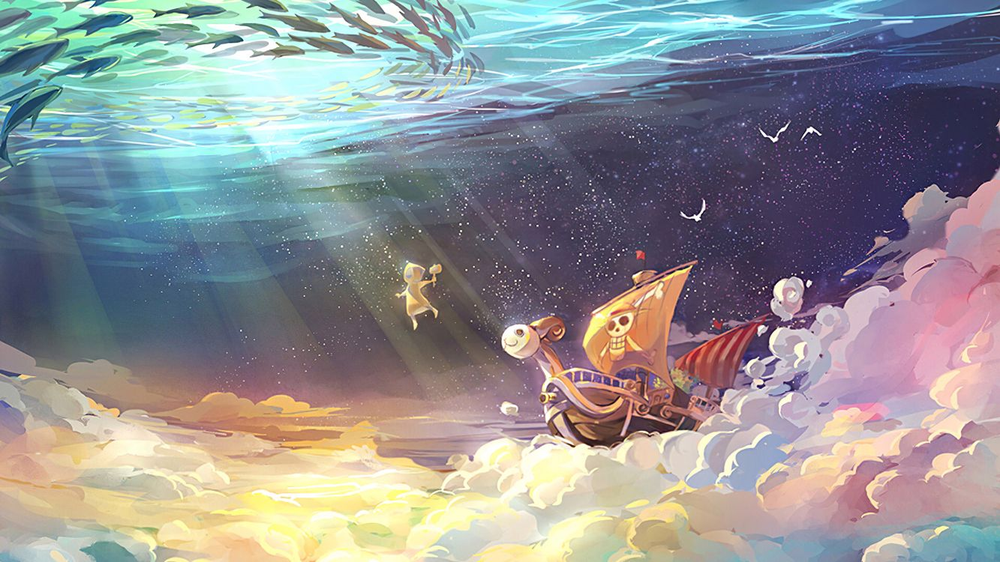

Website ini dibuat untuk mengeksplorasi diri dalam pengetahuan dan juga dalam hal menulis
serta mengulik hal-hal menarik lainnya.Pembahasan yang ada didalamnya mungkin akan ber
macam-macam baik dari segi sosial, ilmu pengetahuan, seni, atau juga hiburan,olahraga
dan mungkin finansial. Just remember ! halaman website ini bukan bertujuan untuk
sekedar hiburan saja pure akan tetapi ditujukan untuk membaca, dan berbagi
pengetahuan yang sekiranya bermanfaat, untuk diri sendiri utamanya juga orang lain
selanjutnya. Sebagai pengingat bagi penulis juga sebagai bentuk berbagi untuk lainnya.
hanya mengingatkan bukan diperuntukan untuk orang yang suka membaca pada umumnya. dan bukan untuk bertujuan buruk,
hanya untuk menambah khazanah pengetahuan dan informasi.
"KARENA TERKADANG DALAM HIDUP SESUATU HAL AKAN TIMBUL
DENGAN PERTANYAAN BERPROSES MENJADI JAWABAN DAN BEBERAPA HAL
MUNGKIN AKAN BERAKHIR MENJADI TANDA TANYA KEMBALI".
PEMBAHASAN

ONE PIECE
Sebuah manga yang ditulis dan diilustrasikan oleh Eiichiro Oda manga yang diadaptasi
ke dalam anime ini mempunyai tema yang cukup menarik,Sebuah tema tentang kehidupan bajak-
laut, dengan seorang tokoh utama nya pada episode awal tak meyakinkan, dalam sifatnya dan
bermodal tekad, dengan tingkah konyolnya yang juga cukup menjengkelkan.
Namun dalam episode-episodenya menyajikan cerita fantasi yang cukup heroik pada alur ceritanya, dimana
dalam episode-episodenya menyajikan cerita yang cukup mengesankan, dan juga unik serta
tingkah konyol pada alur ceritanya. Juga dalam ceritanya menyajikan inspirasi dan beberapa
part dalam ceritanya menyajikan cerita sedih yang dapat dijadikan pelajaran.
One Piece telah menerima pujian atas alur cerita, gambar, karakterisasi, dan humornya.
Beberapa volume dari manga ini telah memecahkan rekor penerbitan, termasuk cetakan awal-
tertinggi dari buku apa pun di Jepang. Situs web resmi untuk manga One Piece karya
Eiichiro Oda mengumumkan bahwa manga ini telah meraih Guinness World Record untuk
kategori "salinan terbanyak yang diterbitkan untuk seri buku komik yang sama oleh seorang
penulis tunggal". Hingga bulan Mei 2018, manga ini telah terjual hingga lebih dari 440
juta salinan di seluruh dunia, menjadikannya seri manga terlaris dalam sejarah.
One Piece juga menjadi manga terlaris selama sepuluh tahun berturut-turut pada tahun 2017.
One Piece bukan hanya tentang petualangan bajak laut, tetapi juga tentang persahabatan,
keberanian, impian, dan nilai-nilai kehidupan. Beberapa alur cerita yang mengagumkan daftar
terlihat pada beberapa episode-episodenya seperti penyelamatan nami, perang marine ford yang
menyebabkan saudara dari luffy tewas, juga belum beberapa lama yang lalu juga pertarungan
melawan Kaido, dan mungkin kedepannya akan ada episode-episode yang akan leih seru lagi,
karena penulis sendiri belum mengupdate kisah perjalanan para nakama.
Banyak nilai-nilai positif yang diselipkan oleh Eichiiro Oda dalam kisah One Piece ini,
walaupun dalam cakupan fantasi namun dalam ceritanya dapat dijadikan nilai yang dapat dipetik
dari kisah One Piece ini, yaitu diantaranya nilai-nilai keberanian dan perjuangan dalam membela
kebaikan, memberikan sentuhan moral yang terlihat samar, juga nilai semangat dalam tekad nya cerita
one piece ini menyajikan nilai postif dalam kesederhanaan dan juga beberapa bumbu humor yang menjadi
kan cerita terlihat santai dalam alur ceritanya. Kejeniusan Eichiiro Oda juga patut diapresiasi
dengan karakter-karakter dalam ceritanya yang tak kalah menarik. baik dari sisi antagonis maupun protagonis
dari cerita One Piece ini.
Jika penasaran silahkan di cari tau barang kali anda akan suka :)
FAKTOR PENDORONG DAN PENGHAMBAT BUDAYA
Faktor pendorong terjadinya budaya
Adanya generasi penerus yang mau dan siap untuk melanjutkan budaya.
Adanya hasrat untuk menjaga kelestarian budaya agar budaya tidak lenyap.
Adanya perubahan dalam lingkungan hidup yang baik agar dapat mendukung berkembangnya budaya yang baik.
Faktor pendorong terjadinya budaya
Budaya Asing yang masuk dan memungkinkan menggeser budaya asli.
Generasi penerus yang menganggap budaya yang lama adalah budaya kuno sehingga melupakan budaya nya sendiri.
Tidak adanya kepedulian masyrakat untuk mewariskan budaya leluhurnya.